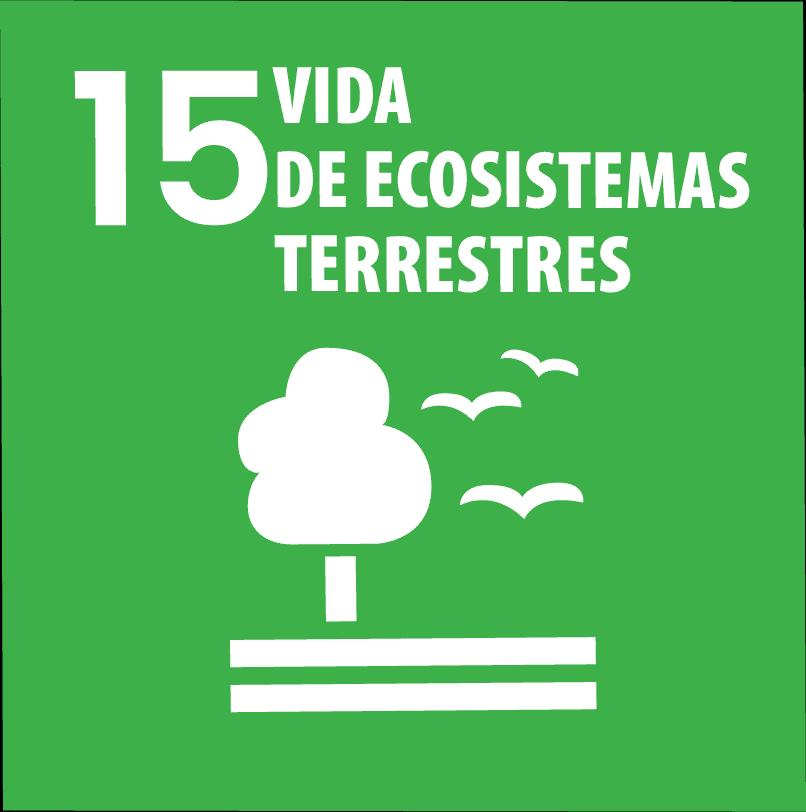

ecossistemas terrestres e a biodiversidade.
A ODS 15 (Objetivo de Desenvolvimento Sustentável 15) tem como foco proteger, recuperar e promover o uso sustentável dos ecossistemas terrestres. Isso inclui gerenciar de forma sustentável as florestas, combater a desertificação, deter e reverter a degradação do solo e conter a perda da biodiversidade.
O desafio de proteger, recuperar e promover o uso sustentável dos ecossistemas terrestres. A degradação ambiental causada pelo desmatamento, uso excessivo do solo, perda da biodiversidade e mudanças climáticas ameaça a saúde dos solos, das florestas e da fauna. Espécies estão desaparecendo em ritmo acelerado, e muitos ecossistemas estão à beira do colapso.